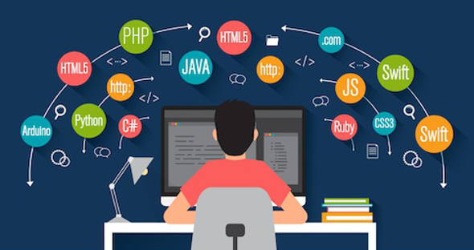

Jalur Menjadi Web Developer
Hai guys, gimana kabar kalian semoga kalian dalam keadaan sehat. Kali ini saya akan memberikan sebuah artikel bag kalian yang ingin menjadi web developer. Sebelumnya udah ada yang tau belum apa itu web developer. Mungkin klo kalian anak IT pasti tau apa itu web developer, klo kalian bukan anak IT jangan berkecil hati klo kalian tidak tahu, saya akan jelaskan apa itu web developer. Web Developer adalah seseorang yang membuat program sebuah website. Mungkin kalian akan bertanya apakah susah untuk menjadi web developer? jawabannya cuma satu yaitu niat, klo kalian sudah niat pasti kalian bisa menjadi web developer. Untuk menjadi web developer tidak harus kalian kuliah jurusan IT, kok bisa gitu? bisa karena orang yang kuliah jurusan IT belum tentu mereka bisa membuat program web jadi untuk kalian yang pendidikannya bukan dari latarbelakang IT jangan minder saya sendiri pendidikan saya bukan berlatarbelakang IT. Jadi semua orang bisa menjadi web developer asalkan niat kalian sungguh - sungguh. Bagi kalian yang ingin menjadi web developer, web developer itu dibagi menjadi 3 yaitu Front End, Back End, dan Fullstack. Apa itu Front End, Back End, dan Fullstack? nah ini akan saya bahas di bawah.